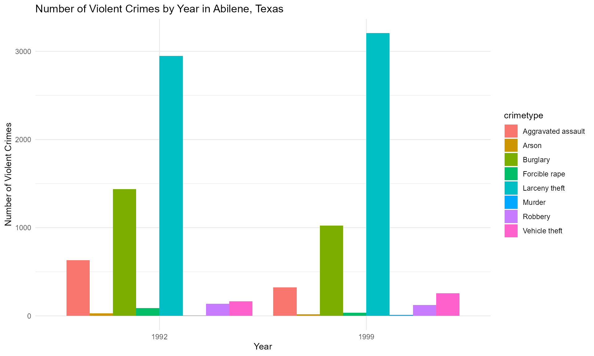

crimedatasets: A Comprehensive Collection of Crime Datasets
Source:vignettes/crimedatasets.Rmd
crimedatasets.Rmd
library(crimedatasets)
library(ggplot2)
library(dplyr)
#>
#> Attaching package: 'dplyr'
#> The following objects are masked from 'package:stats':
#>
#> filter, lag
#> The following objects are masked from 'package:base':
#>
#> intersect, setdiff, setequal, unionIntroduction
The crimedatasets package provides a comprehensive
collection of datasets focusing exclusively on crimes, criminal
activities, and related socio-economic factors. This package is an
essential resource for researchers, analysts, and students working in
criminology, socio-economic studies, and crime analysis. All
datasets included in the crimedatasets package are sourced from various
established crime and public data repositories, ensuring the
authenticity and reliability of the data.
Dataset Suffixes
The datasets in the crimedatasets package are
distinguished by suffixes that specify the type and format of the data.
These suffixes include:
tbl_df: A tibble data frame df: A standard
data frame ts: A time series object sf: A
spatial object (simple features)
Example Datasets
Here are some examples of datasets included in the
crimedatasets package:
Abilene_tbl_df: Crime records from Abilene, Texas, USA
(Tabular Data).
Attorney_tbl_df: Convictions reported by U.S. Attorney’s
Offices (Tabular Data).
wmurders_ts: Annual female murder rate in the USA from
1950-2004 (Time-series Data).
Visualizing Data with ggplot2
Below are some examples of how to create visualizations using the
datasets from the crimedatasets package.
1. Visualizing Abilene (Texas) Crime Records
# Bar Chart with Abilene_tbl_df data set
Abilene_tbl_df %>%
ggplot(aes(x = factor(year), y = number, fill = crimetype)) +
geom_bar(stat = "identity", position = "dodge") +
labs(title = "Number of Violent Crimes by Year in Abilene, Texas",
x = "Year",
y = "Number of Violent Crimes") +
theme_minimal()
2. Visualizing Annual Female Murder Rates
# Convert the ts object into a data.frame
wmurders_df <- data.frame(
year = as.numeric(time(wmurders_ts)), # Extract the time values as numeric
murder_rate = as.numeric(wmurders_ts) # Convert ts values to numeric
)
# Plot using ggplot2
ggplot(wmurders_df, aes(x = year, y = murder_rate)) +
geom_line(color = "red") +
labs(
title = "Annual Female Murder Rate in the USA (1950-2004)",
x = "Year",
y = "Murder Rate per 100,000 Women"
) +
theme_minimal()
Conclusion
The crimedatasets package provides a valuable and
extensive collection of crime-related datasets, empowering researchers,
analysts, and students to explore and analyze various aspects of
criminal behavior and socio-economic factors. By offering datasets in
diverse formats (e.g., tbl_df, df, ts, sf), this package ensures
compatibility with a wide range of analytical tools and
methodologies.
Through examples and visualizations in this vignette, we have demonstrated how to explore and gain insights from these datasets using popular R packages like dplyr and ggplot2. Whether you are investigating historical trends, studying regional crime patterns, or analyzing socio-economic correlations, crimedatasets serves as a comprehensive resource for your analytical needs.
We encourage users to explore the full range of datasets provided in crimedatasets and leverage them to advance research in criminology, policy-making, and data-driven decision-making.